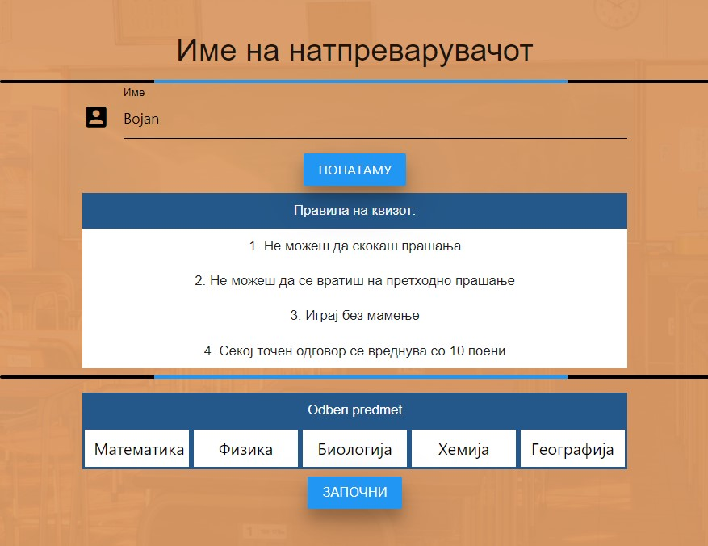

Projects

Smart Routing App
Full-stack route optimization platform using React and Django with Travelling Salesman Algorithm implementation. Features interactive OpenStreetMap interface, multi-modal transportation (car, bicycle, walking), JWT authentication, and turn-by-turn navigation. Deployed on Render with PostgreSQL database.
🔗 Live Demo Detailed infoAI Resume & Career Platform
AI-powered platform using Python and Streamlit with Meta's Llama 3.3 70B via Groq API. Combines Resume Analyzer and AI Career Coach features, providing instant match scores, keyword analysis, and personalized interview preparation. Showcases AI integration, NLP, and PDF parsing expertise.
🔗 Live Demo Detailed info

Team ToDo
Task management solution built with C# .NET Framework featuring multi-level role-based authorization (Admin, Team Leader, Employee), DataTables integration for advanced task filtering, and secure authentication. Demonstrates full-stack development with database design and team collaboration tools.
🔗 Live Demo Detailed infoMinistry of Finance Website
Fully responsive government website using React and Firebase with multilingual support (Macedonian/English). Features Firebase Authentication, dynamic job listings with real-time updates, and comprehensive ministry information. Showcases modern web design principles and scalable architecture.
🔗 Live Demo Detailed info

Educational Quiz
Interactive educational platform for natural science subjects (Geography, Biology, Maths, Chemistry, Physics). Features personalized 20-question quizzes, real-time score tracking, and answer review functionality. Demonstrates front-end web development and user experience design skills.
🔗 Live Demo Detailed infoWorked with